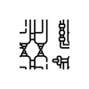
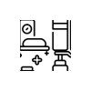
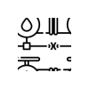

UA
Місія
Ми прагнемо привернути увагу до катастрофічних наслідків війни для водних ресурсів в Україні та об’єднати міжнародну спільноту, владу, гуманітарні організації й наше суспільство для подолання цих наслідків.
Наслідки російських атак на критичну інфраструктуру
Майже 10 мільйонів
українців не мають безперебійного доступу до чистої води
Понад 1 000 км
Зруйновано понад 1 000 км водопровідних мереж через обстріли та бойові дії
18 кубокілометрів води
Росіяни знищили 18 кубокілометрів води, що могло б забезпечити все людство водою на два дні, під час підриву Каховської ГЕС.
₴84,65 млрд
сума збитків завдана нашим водним ресурсам
2 045 тонн
тонн забруднюючих речовин отруїли водойми.
Це не просто цифри – це реальність, у якій живуть мільйони людей
Карта втрат і відновлення
Інтерактивна карта відображає реальні масштаби впливу війни на водні ресурси України. Ви зможете побачити місця екологічної катастрофи – зруйновані водосховища, забруднені річки, пошкоджені водопровідні мережі.
Але ця карта – не лише про втрати. Вона також показує регіони, де вдалося відновити доступ до води, завдяки зусиллям Карітас України, міжнародних партнерів та місцевих громад.
Досліджуйте карту та дізнавайтесь більше про виклики та успіхи у боротьбі за чисту воду.

Фотовиставка WASH in WAR – ініціатива, яка розкриває руйнівний вплив війни на водні ресурси України та показує реальні історії людей, що втратили доступ до безпечної питної води.
Ця виставка – не лише про втрати, а й про боротьбу за відновлення, підтримку громад та пошук рішень для майбутнього.
Приходьте, щоб дізнатися більше та підтримати ініціативу.
Четвер, 20 березня
15:00
Червоний корпус Київського Національного Університету ім. Т. Г. Шевченка (м. Київ, вул. Володимирська, 60)
Вода у вогні війни


Карітас України активно працює над реалізацією програми допомоги у сфері води, санітарії та гігієни (WASH) для постраждалих регіонів.
Що ми робимо?

Відновлюємо джерела водопостачання
Реконструюємо свердловини, встановлюємо насосні станції, облаштовуємо модульні системи та санітарні зони.

Забезпечуємо громади фільтрувальними станціями
Встановлюємо системи очищення води у лікарнях, школах та соціальних закладах.

Роздаємо гігієнічні набори
Підтримуємо людей у прифронтових районах, де доступ до елементарних засобів гігієни обмежений.

Покращуємо санітарно-гігієнічні умови
Ремонтуємо туалети, душові та ванні кімнати в лікарнях, школах, притулках.
Історії людей з постраждалих регіонів
Після підриву росіянами Каховської ГЕС будинок пані Людмили опинився у водяному полоні
На фото пані Людмила з Нововасилівки Снігурівської ОТГ на Миколаївщині. Після підриву росіянами Каховської ГЕС її будинок опинився у водяному полоні. «Вода піднялася у дворі на 2 метри, в будинку до 1,70 м. Досі на стінах залишаються розводи, що нагадують про пережите», – розповідає жінка. На фото будинок після затоплення – купа бруду, розбухлі меблі, цвіль на стінах, непрацююча техніка. “Ми втратили майже все – меблі, техніку, запаси їжі. Вода зруйнувала піч, у якій ми пекли хліб, і затопила погріб. Лише на ліквідацію наслідків знадобилося 5 місяців, а відновлення будинку все ще триває”, – з сумом каже жінка.


Отруєння річки Десна в результаті підриву відстійників на цукровому заводі в Тьоткіно
Забруднення Сейму дісталося Десни, в яку він впадає, влада Чернігівщини повідомляє про потемніння води та мор риби.
Порятунок з лівобережжя: Катерину з дітьми вдалось евакуювати на правий берег
Вода підіймалась дуже швидко, тобто щопівгодини, мабуть, на сантиметрів десять. Дуже швидко, стрімко, просто на очах. Як у фільмі "Титанік", знаєте, як вода коридорами йшла?


Ми прагнемо підтримати постраждале від війни населення та громади в їхніх зусиллях вийти з кризи та забезпечити доступ до базових потреб у секторах водопостачання, санітарії та гігієни.
Керівниця програми WASH, Карітас Україна

Реквізити для підтримання проекту
Intermediary:
KBC BANK NV, Brussels, Belgium
Банк посередник:
SWIFT:KREDBEBB
Beneficiary’s bank:
JSC KREDOBANK
Банк одержувача:
Lviv, Ukraine SWIFT:WUCBUA2X
Beneficiary:
Acc UA79 325365 0000002600801913626
name:
“Caritas Ukraine”
Одержувач:
рахунок відкритий у ПАТ “КРЕДОБАНК”,
Призначення платежу:
CHARITABLE DONATION FOR EA
Purpose of payment:
CHARITABLE DONATION FOR EA
Intermediary:
Банк посередник:
Beneficiary’s bank:
JSC KREDOBANK
Банк одержувача:
Lviv, Ukraine SWIFT:WUCBUA2X
Beneficiary:
Acc UA79 325365 0000002600801913626
name:
“Caritas Ukraine”
Одержувач:
рахунок відкритий у ПАТ “КРЕДОБАНК”,
Призначення платежу:
CHARITABLE DONATION FOR EA
Purpose of payment:
CHARITABLE DONATION FOR EA